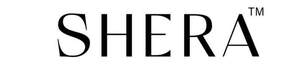

Trade Mark Journal No.2025/048 28 November 2025
UK00004296499 18 November 2025 (18,25)

- Class 18
- Bags; Tote bags; Luggage bags; Duffle bags; Duffel bags; Carry-on bags; Toiletry bags; Bags for clothes; Drawstring bags; Carry-all bags; Belt bags and hip bags; Nose bags [feed bags]; Bags (Nose -) [feed bags]; Carrying bags; Grocery tote bags; Cross-body bags; Bags for umbrellas; Diaper bags; Luggage, bags, wallets and other carriers; Crossbody bags; Cloth bags; Bucket bags; Leather bags; Sling bags; Nappy bags; Canvas bags; Belt bags; Duffel bags for travel; Clutch bags; Shoe bags; Wheeled bags; Kit bags; Messenger bags; Souvenir bags; Travel bags; Bags for travel; Leather bags and wallets; Garment bags; Shoulder bags; Toilet bags; Make-up bags; Cosmetic bags; Waterproof bags; Reusable shopping bags; Makeup bags; Umbrella bags; Towelling bags; Camping bags; Courier bags; Bags for campers; Roll bags; Bags for carrying pets; Knitted bags; Gym bags; Bags [envelopes, pouches] of leather, for packaging; Bags [envelopes, pouches] of leather for packaging; Bags [envelopes, pouches] for packaging of leather; Attaché bags; Hand bags; Travelling bags; Cabin bags; Flight bags; Traveling bags; Beach bags; Overnight bags; Bags for climbers; Mesh shopping bags; Mesh bags for shopping; Boot bags; Leather shopping bags; Canvas shopping bags; Bum bags; Hiking bags; Knitting bags; Frames for bags [structural parts of bags]; Roller bags; Nose bags; Wash bags for carrying toiletries; Suit bags; Hunting bags; Baby carrying bags; Gladstone bags; Waist bags; Feed bags; Grips for holding shopping bags; Tool bags of leather, empty; Wrist mounted carryall bags; Grips [bags]; Tool bags, empty; Children's shoulder bags; Pouches for holding make-up, keys and other personal items; Handbags; Handbags, purses and wallets; Clutch purses [handbags]; Leather handbags; Fashion handbags; Pocketbooks [handbags]; Handbags for ladies; Ladies handbags; Straps for handbags; Clutch handbags; Handbags for men; Purse frames [handbags]; Purses [leatherware]; Purses; Handbags made of leather; Slouch handbags; Leather purses; Evening handbags; Gentlemen's handbags; Handbags made of imitations leather; Purses, not of precious metal [handbags]; Cosmetic purses; Ladies' handbags; Gent's handbags; Clutches [purses]; Purses, not made of precious metal [handbags]; Clutch purses; Briefcases [leatherware]; Handbag straps; Leather coin purses; Imitation leather bags; Travelling bags [leatherware]; Multi-purpose purses; Briefcases [leather goods]; Luggage tags [leatherware]; Evening purses; Bags for sports clothing; Leather wallets; Card wallets [leatherware]; Bags made of imitation leather; Straps for coin purses; Travelling bags made of imitation leather; Leather for shoes; Coin purses; Leather briefcases; Shoe bags for travel; Bags made of leather; Change purses; Leather suitcases; Small clutch purses; Small purses; Garment bags for travel made of leather; Handbags, not of precious metal; Frames for coin purses [structural parts of coin purses]; Textile shopping bags; Carryalls; Bags (Game -) [hunting accessories]; Game bags [hunting accessories]; Travelling bags made of leather; Athletics bags; Billfolds; Chain mesh purses; Athletic bags; Backpacks; Flexible bags for garments; Pochettes; Leather luggage tags; Adhesive tags of leather for bags; Briefcases made of leather.
- Class 25
- Clothes; Clothing; Swaddling clothes; Baby clothes; Beach clothes; Nappy pants [clothing]; Denims [clothing]; Jackets [clothing]; Work clothes; Shorts [clothing]; Aprons [clothing]; Drawers [clothing]; Drawers as clothing; Clothes for sports; Jackets (Stuff -) [clothing]; Stuff jackets [clothing]; Clothes for sport; Linen clothing; Headbands [clothing]; Headbands for clothing; Kerchiefs [clothing]; Bottoms [clothing]; Gloves [clothing]; Gloves as clothing; Capes (clothing); Furs [clothing]; Trunks being clothing; Maternity clothing; Babies' pants [clothing]; Clothing layettes; Jerseys [clothing]; Layettes [clothing]; Hoods [clothing]; Clothing for leisure wear; Woolen clothing; Oilskins [clothing]; Gabardines [clothing]; Ready-to-wear clothing; Clothing for babies; Bodies [clothing]; Garments for protecting clothing; Tops [clothing]; Belts [clothing]; Belts for clothing; Gussets for underwear [parts of clothing]; Playsuits [clothing]; Collars [clothing]; Pockets for clothing; Veils [clothing]; Knitwear [clothing]; Paper hats for use as clothing items; Corsets [clothing, foundation garments]; Silk clothing; Mitts [clothing]; Fabric belts [clothing]; Hats (Paper -) [clothing]; Paper hats [clothing]; Beach clothing; Braces for clothing; Belts (Money -) [clothing]; Money belts [clothing]; Chaps (clothing); Gussets for bathing suits [parts of clothing]; Ready-made clothing; Embroidered clothing; Casual clothing; Knitted clothing; Jacket liners; Blouson jackets; Jackets; Sleeveless jackets; Sleeved jackets; Fleece jackets; Windproof jackets; Suede jackets; Leather jackets; Denim jackets; Rainproof jackets; Bomber jackets; Quilted jackets [clothing]; Waterproof jackets; Men's and women's jackets, coats, trousers, vests; Camouflage jackets; Sheepskin jackets; Knit jackets; Motorcycle jackets; Wind-resistant jackets; Weatherproof jackets; Fur jackets; Shell jackets; Padded jackets; Snowboard jackets; Reversible jackets; Ski jackets; Rain jackets; Casual jackets; Riding jackets; Sweat jackets; Warm-up jackets; Polar fleece jackets; Fur coats and jackets; Corduroy trousers; Trousers of leather; Waterproof trousers; Dinner jackets; Wind jackets; Corduroy pants; Heavy jackets; Leather pants; Hunting jackets; Bed jackets; Waterproof pants; Light-reflecting jackets; Safari jackets; Jackets being sports clothing; Smoking jackets; Trousers; Down jackets; Donkey jackets; Track jackets; Weatherproof pants; Short overcoat for kimono (haori); Dress pants; Snowboard trousers; Fishing jackets; Fleece vests; Vest tops; Leggings [trousers]; Windproof clothing; Denim pants; Korean outer jackets worn over basic garment [Magoja]; Sports jackets; Stuff jackets; Camouflage pants; Turtleneck shirts; Ski trousers; Trousers shorts; Rain trousers; Long jackets; Pants; Fleece shorts; Corduroy shirts; Quilted vests; Wind resistant jackets; Leather clothing; Clothing of leather; Leather (Clothing of -); Rainproof clothing; Riding trousers; Fishermen's jackets; Turtleneck sweaters; Skirt suits; Ski pants; Bib overalls for hunting; Golf trousers; Outerwear; Denim coats; Waistcoats [vests]; Coats of denim; Trousers for sweating; Wind-resistant vests; Camouflage vests; Duffle coats; Golf clothing, other than gloves; Leather suits; Suits of leather; Snow pants; Frock coats; Leather waistcoats; Turtleneck pullovers; Dress shirts; Duffel coats; Leather coats; Waterproof clothing; Camouflage gloves; Casual trousers; Wind pants; Leather belts [clothing]; Leather dresses; Jogging pants; Water-resistant clothing; Motorcycle gloves; Bib shorts; Fingerless gloves as clothing; Waterproof boots; Clothing for sports; Sports clothing; Sport shoes; Sport shirts; Sports garments; Sports clothing [other than golf gloves]; Footwear for sport; Footwear for use in sport; Clothing for wear in wrestling games; Boots for sport; Clothing for cycling; Athletic clothing; Clothing for gymnastics; Sports shoes; Triathlon clothing; Sport coats; Sport stockings; Articles of sports clothing; Sports shirts; Sports pants; Sports wear; Clothing for skiing; Footwear for sports; Sports footwear; Leisure clothing; Sports jerseys and breeches for sports; Clothing for wear in judo practices; Fishing clothing; Footwear not for sports; Clothing for horse-riding [other than riding hats]; Sports socks; Parts of clothing, footwear and headgear; Boots for sports; Clothing for cyclists; Sports jerseys; Visors [clothing]; Dance clothing; Sports bras; Sports bibs; Sports vests; Combative sports uniforms; Jogging sets [clothing]; Tennis wear; Moisture-wicking sports shirts; Sports singlets; Jogging bottoms [clothing]; Tennis shirts; Moisture-wicking sports pants; Sports over uniforms; Sports headgear [other than helmets]; Boxing shoes; Football shoes; Athletics shoes; Rugby shoes; Cycling shoes; Cleats for attachment to sports shoes; Soccer shoes; Leisure shoes; Clothing for fishermen; Athletics footwear; Clothing for children; Underwear; Jockstraps [underwear]; Briefs [underwear]; Sweat-absorbent underclothing [underwear]; Trunks [underwear]; Sweat-absorbent underwear; Underwear (Anti-sweat -); Anti-sweat underwear; Maternity underwear; Boy shorts [underwear]; Disposable underwear; Knitted underwear; Undergarments; Underwear for women; Thermal underwear; Underpants; Babies' pants [underwear]; Men's underwear; Functional underwear; Underclothes; Long underwear; Women's underwear; Teddies [undergarments]; Panties; Ladies' underwear; Lingerie; Slips [undergarments]; Knickers; Underpants for babies; G-strings; Thongs; Underclothing; Maternity pants; Maternity lingerie; Teddies [underclothing]; Thong sandals; Pajamas; Undershirts; Anti-sweat underclothing; Trouser socks; Corsets [underclothing]; Socks and stockings; Sweat-absorbent underclothing; Bodices [lingerie]; Pyjamas; Braces for clothing [suspenders]; Latex clothing; Bra straps [parts of clothing]; Anti-perspirant socks; Braces [suspenders] for clothing / Suspenders [braces] for clothing; Maternity shorts; Baby pants; Slips [underclothing]; Gussets for tights [parts of clothing]; Babies' undergarments; Swimsuits; Hosiery; Bandeaux [clothing]; Slips [clothing]; Nipple pasties being underclothing; Sleep pants; Cycling pants; Maillots [hosiery]; Sweat-absorbent socks; Pantyhose; Muffs [clothing]; Bed socks; Bras; Sweatpants; Warm-up pants.
Awaz Shikhi